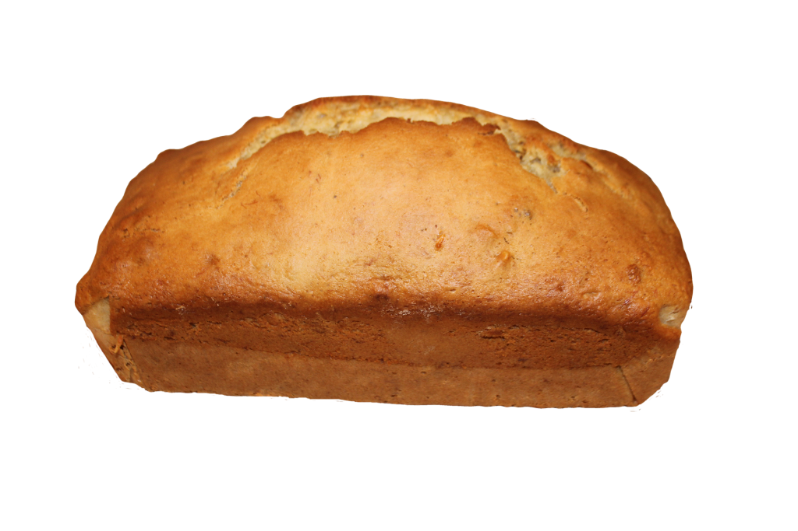

My Recipe
Introduction
I am going to be showing you how to make Banana Bread. I chose this
because its fairly simple, tastes really good and I make it alot with my Mom.
I also take it to school with me alot to eat as a snack.

Ingredients
- 2 to 3 ripe bananas
- ⅓ cup of melted butter
- ½ teaspoon baking soda
- 1 pinch of salt
- ¾ cup of sugar
- 1 Large egg
- 1 teaspoon vanilla extract
- 1 ½ cups all purpose flour
Instructions
- Preheat your oven to 175°C and butter an 8 by 4 inch loaf pan
- Mash the bananas and add the butter in a mixing bowl
- Mix in the baking soda and salt. Stir in the sugar, beaten egg, and vanilla extract. Mix in the flour. This should all be put in the mixing bowl
- Pour the batter/mixture into your prepared loaf pan
- Bake for 55 to 65 minutes in your oven at 175°C, then cool and enjoy!